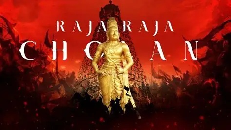
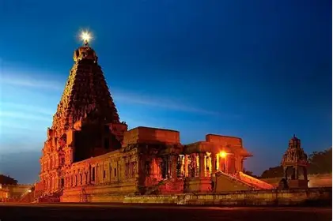

<This is a simple HTML page about Rajaraja Cholan.>
RRC
TITLE

Rajaraja Cholan
Rajaraja – "King of Kings" (the regnal name he adopted)
Arulmozhi Varman – his birth name, meaning "blessed by the grace of God"
Rājakesarivarman – "Lion among kings"
ACHIEVEMENTS

Rajaraja Cholan Temple
Conquest of the Chera & Pandya kingdoms – He defeated
the Pandyas and Cheras, annexing their territories and
ending their independence.
Invasion of Sri Lanka (Ceylon) – In 993 CE, he launched
a massive naval campaign, captured the northern part of
the island, and made it a Chola province
(Mummudi Chola Mandalam).
Conquest of the Maldives – His navy subdued the Maldives,
securing Indian Ocean trade routes.
KEY TERMS
Rajaraja Cholan
Also known as Rajarajacholan, was a Tamil Chola emperor
who ruled from 985 to 1014 CE.
Achievements
He expanded the Chola Empire to its greatest extent,
built the Brihadeshwara Temple in Thanjavur, and
established a strong administrative system.
Legacy
His reign is considered the golden age of the Chola
dynasty, and his contributions to art, architecture,
and administration have had a lasting impact on
South Indian history.
.webp)